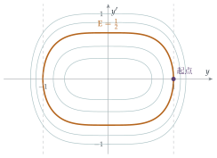

STEP III 2013，第 7 题
继续之前，请先阅读题目（原题为英文）。题目载于 STEP Support Programme 的题目资料库： step.maths.org/questions/13-s3-q7
引子
大多数微分方程（differential equation）都是解不出来的。\(y'' + y^3 = 0\) 的解无法用我们熟悉的函数写成公式，第 (iii) 部分那头怪物就更不用说了。然而，我们仍然可以对这些解说出很多东西：它们保持有界（bounded）、它们会振荡、它们会渐趋平稳。诀窍在于找出一个由解及其导数（derivative）构成、而且永不增加的量。这样一来，解就被困住了。
在物理学中，这个量通常就是能量（energy）。在碗中滚动的球不可能爬到比起始高度更高的地方，因为能量守恒，而在有摩擦时能量更会减少。本题把同样的推理用于三条方程，其中最后一条是特意挑选的，要你自己发明那个“能量”。这个方法由李雅普诺夫（Aleksandr Lyapunov）于 1892 年提出，是研究微分方程最重要的工具之一。
动笔之前
在第 (i) 部分，把 \(y\) 看成质点的位置，把 \(x\) 看成时间。那么 \(y'' = -y^3\) 就是牛顿定律，其中力为 \(-y^3\)。动能（kinetic energy）和势能（potential energy）分别是甚么？
动能是 \(\frac12(y')^2\)（取质量为 \(1\)），而力 \(-y^3\) 来自势函数 \(V(y) = \frac14y^4\)，因为力等于 \(-V'(y)\)。总能量是 \(\frac12(y')^2 + \frac14y^4\)，即 \(\mathrm{E}\) 的一半。能量守恒（conservation of energy）所说的，正正就是 \(\mathrm{E}\) 为常数。
逐步解题
阶段 1 守恒
由链式法则（chain rule）， \[\frac{\mathrm{d}\mathrm{E}}{\mathrm{d}x} = 2y'y'' + 2y^3y' = 2y'\bigl(y'' + y^3\bigr) = 0.\] 所以 \(\mathrm{E}\) 是常数，等于它在 \(x = 0\) 时的值：\(\mathrm{E} = 0 + \frac12 = \frac12\)。由于 \((y')^2 \geq 0\)，我们得到 \(\frac12y^4 \leq \frac12\)，所以 \(y^4 \leq 1\)，即 \(|y| \leq 1\)。■
这个解在 \(-1\) 与 \(1\) 之间振荡，在 \((y, y')\) 平面上描出闭曲线 \((y')^2 + \frac12y^4 = \frac12\)（图 8.2.1）。
阶段 2 耗散
对 \(\mathrm{E} = (v')^2 + 2\cosh v\) 求导。利用微分方程把 \(v''\) 换掉。结果的正负号是甚么？
\[\frac{\mathrm{d}\mathrm{E}}{\mathrm{d}x} = 2v'v'' + 2\sinh v\,v' = 2v'\bigl(v'' + \sinh v\bigr) = 2v'\bigl(-xv'\bigr) = -2x(v')^2 \leq 0 \quad\text{当 } x \geq 0.\] \(xv'\) 这一项的作用有如摩擦，会带走能量。所以当 \(x \geq 0\) 时，\(\mathrm{E}(x) \leq \mathrm{E}(0)\)。在 \(x = 0\) 处，\(\cosh(\ln 3) = \frac{3 + \frac13}{2} = \frac53\)，所以 \(\mathrm{E}(0) = \frac{10}{3}\)。因此 \[2\cosh v \leq (v')^2 + 2\cosh v = \mathrm{E}(x) \leq \tfrac{10}{3}, \qquad\text{所以}\qquad \cosh v(x) \leq \tfrac53. \qed\]
阶段 3 发明能量
第 (iii) 部分没有给任何提示。我们需要一个不会增加的函数 \(\mathrm{E} = (w')^2 + F(w)\)。
若 \(\mathrm{E} = (w')^2 + F(w)\)，则 \(\mathrm{E}' = 2w'w'' + F'(w)w'\)。\(F'(w)\) 应该是甚么，才可以利用方程把 \(w''\) 换掉，最后只剩下 \((w')^2\) 的倍数？
我们希望 \(\mathrm{E}' = 2w'\bigl(w'' + w\cosh w + 2\sinh w\bigr)\)，所以需要 \(F'(w) = 2(w\cosh w + 2\sinh w)\)。由于 \(\frac{\mathrm{d}}{\mathrm{d}w}(w\sinh w) = \sinh w + w\cosh w\)，我们可以取 \[F(w) = 2w\sinh w + 2\cosh w, \qquad \mathrm{E} = (w')^2 + 2w\sinh w + 2\cosh w.\] 于是，利用方程可得 \[\frac{\mathrm{d}\mathrm{E}}{\mathrm{d}x} = -2(5\cosh x - 4\sinh x - 3)(w')^2.\]
证明对所有 \(x\) 都有 \(5\cosh x - 4\sinh x - 3 \geq 0\)。（把它用 \(e^x\) 表示，然后找出一个完全平方。）然后完成整个论证。
\(5\cosh x - 4\sinh x - 3 = \frac52(e^x + e^{-x}) - 2(e^x - e^{-x}) - 3 = \frac12e^x - 3 + \frac92e^{-x} = \frac12\bigl(e^{x/2} - 3e^{-x/2}\bigr)^2 \geq 0\)。所以 \(\mathrm{E}\) 永不增加。在 \(x = 0\) 处，\(\mathrm{E}(0) = \frac12 + 0 + 2 = \frac52\)。由于对任何 \(w\) 都有 \(w\sinh w \geq 0\)（两个因子同号）， \[2\cosh w \leq (w')^2 + 2w\sinh w + 2\cosh w = \mathrm{E}(x) \leq \tfrac52, \qquad\text{所以}\qquad \cosh w(x) \leq \tfrac54. \qed\]

回顾
乘以 \(y'\)。在每一部分，\(\mathrm{E}'\) 都是 \(2y'\) 乘以方程的左方，再加上余下的项。正是这个余下的项决定了 \(\mathrm{E}\) 是守恒还是递减。
能量限制位置。由于动能部分 \((y')^2\) 非负，\(\mathrm{E}\) 的上界就是势能部分的上界，从而也给出 \(y\) 的界。
留意隐藏的平方。第 (iii) 部分的阻尼系数看来可能会变号，但它其实是一个经过伪装的完全平方。
背后的数学
李雅普诺夫在 1892 年的博士论文中研究运动的稳定性（stability）：如果一个系统受到轻微扰动而偏离平衡，它会回到平衡，还是愈走愈远？他的“第二方法”是找出一个函数，它在平衡点处取最小值，而且沿着解永不增加；这种函数现在称为李雅普诺夫函数（Lyapunov function）。这样，从平衡点附近出发的解就会一直留在平衡点附近。这个方法的美妙之处，在于它不需要解的公式，只需要微分方程本身，而这正是本题所展示的。现今，从飞机控制系统、电网以至生态系统，各种各样事物的稳定性都是用李雅普诺夫函数来证明的。
物理与工程中的能量
第 (i) 部分是一个非线性振子（nonlinear oscillator）：它像弹簧，但回复力与位移的立方成正比。与简谐振子不同，它的周期取决于振幅（振荡愈大，速度愈快），但能量守恒仍然把它困住。第 (ii) 部分加入了随时间增强的阻尼（damping），能量因而逐渐流失。在工程学中，人们用能量方法来证明结构不会把自己摇散，以及控制系统不会振荡至失控。在偏微分方程（partial differential equation）的理论中，这类“能量估计”是证明解存在而且性质良好的主要工具；有关流体流动方程的问题，包括千禧年大奖难题（Millennium Prize Problems）之一的纳维－斯托克斯（Navier–Stokes）问题，归根究底就是能否找到这样的界。
思维技巧
如果你解不出一条方程，就找一个由解构成、而且导数有确定正负号的量。它会给出解的界。
这种寻找一方面由物理引导（“能量是甚么？”），另一方面由代数引导（“我要加上甚么，导数才会化简？”）。第 (iii) 部分示范了在没有物理直觉可以依靠时，如何走代数这条路。
延伸练习
简谐运动。对于 \(y'' + y = 0\)，其中 \(y(0) = A\)、\(y'(0) = 0\)，求守恒的能量，并由此推出 \(|y| \leq A\)。用精确解核对。
单摆。单摆的角度 \(\theta\) 满足 \(\theta'' + \sin\theta = 0\)（采用适当的单位）。证明 \((\theta')^2 - 2\cos\theta\) 是常数。若单摆在角度 \(\theta_0\) 处由静止开始，其中 \(|\theta_0| \leq \pi\)，证明 \(|\theta|\) 永不超过 \(|\theta_0|\)。若 \(|\theta_0| > \pi\)，哪里会出问题？
阻尼。对于 \(y'' + 2ky' + y = 0\)，其中 \(k > 0\)，证明 \((y')^2 + y^2\) 递减。它是否必定趋向零？
逃逸。对于 \(y'' - y^3 = 0\)，其中 \(y(0) = 1\)、\(y'(0) = 0\)，求一个守恒量，并证明它不能给出 \(y\) 的界。哪里出了问题？
延伸阅读
Steven Strogatz, Nonlinear Dynamics and Chaos（CRC Press）。第 6 章和第 7 章讲述相平面、保守系统和李雅普诺夫函数。
D. W. Jordan & P. Smith, Nonlinear Ordinary Differential Equations（Oxford University Press）。一本标准的大学本科教科书，载有大量能量方法的例子。
Keith Devlin, The Millennium Problems（Basic Books）。书中有一篇关于纳维－斯托克斯问题的浅白介绍。